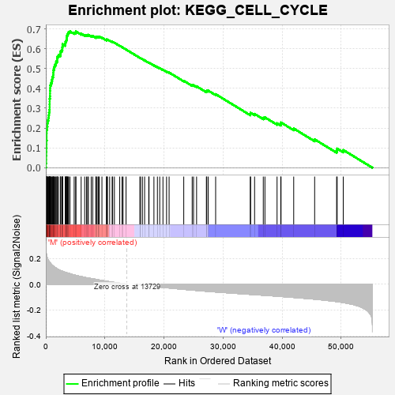
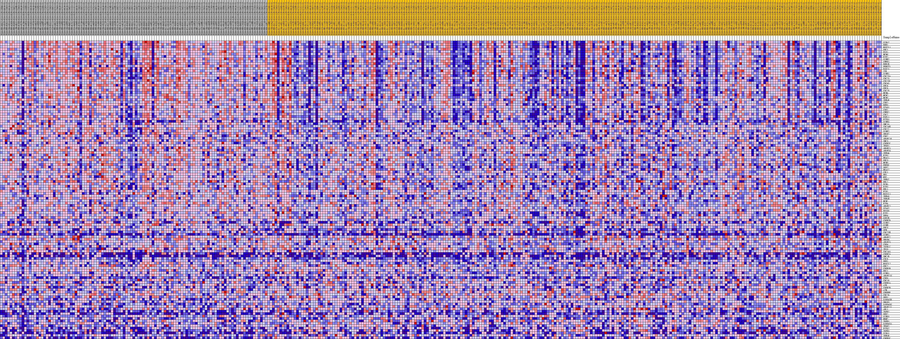
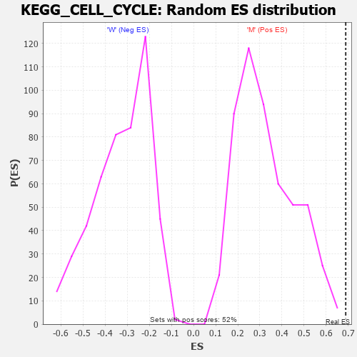

| Dataset | MUC16.MUC16.cls#M_versus_W.MUC16.cls#M_versus_W_repos |
| Phenotype | MUC16.cls#M_versus_W_repos |
| Upregulated in class | M |
| GeneSet | KEGG_CELL_CYCLE |
| Enrichment Score (ES) | 0.68808985 |
| Normalized Enrichment Score (NES) | 2.1044002 |
| Nominal p-value | 0.0 |
| FDR q-value | 0.03614395 |
| FWER p-Value | 0.021 |

| PROBE | DESCRIPTION (from dataset) | GENE SYMBOL | GENE_TITLE | RANK IN GENE LIST | RANK METRIC SCORE | RUNNING ES | CORE ENRICHMENT | |
|---|---|---|---|---|---|---|---|---|
| 1 | CCNA2 | na | 24 | 0.265 | 0.0216 | Yes | ||
| 2 | BUB1 | na | 70 | 0.241 | 0.0409 | Yes | ||
| 3 | MAD2L1 | na | 71 | 0.240 | 0.0608 | Yes | ||
| 4 | ORC1 | na | 86 | 0.234 | 0.0800 | Yes | ||
| 5 | PLK1 | na | 98 | 0.232 | 0.0991 | Yes | ||
| 6 | MCM6 | na | 118 | 0.227 | 0.1176 | Yes | ||
| 7 | E2F2 | na | 121 | 0.226 | 0.1364 | Yes | ||
| 8 | CCNB2 | na | 143 | 0.221 | 0.1544 | Yes | ||
| 9 | CHEK1 | na | 144 | 0.221 | 0.1728 | Yes | ||
| 10 | BUB1B | na | 147 | 0.220 | 0.1911 | Yes | ||
| 11 | PKMYT1 | na | 230 | 0.205 | 0.2066 | Yes | ||
| 12 | RAD21 | na | 268 | 0.202 | 0.2228 | Yes | ||
| 13 | TTK | na | 312 | 0.196 | 0.2382 | Yes | ||
| 14 | CCNB1 | na | 427 | 0.185 | 0.2515 | Yes | ||
| 15 | CDC25A | na | 498 | 0.179 | 0.2652 | Yes | ||
| 16 | CDC23 | na | 542 | 0.177 | 0.2791 | Yes | ||
| 17 | CDC25C | na | 624 | 0.172 | 0.2919 | Yes | ||
| 18 | CDC45 | na | 642 | 0.170 | 0.3057 | Yes | ||
| 19 | ORC4 | na | 644 | 0.170 | 0.3198 | Yes | ||
| 20 | ORC6 | na | 649 | 0.170 | 0.3339 | Yes | ||
| 21 | CDC20 | na | 652 | 0.169 | 0.3479 | Yes | ||
| 22 | MCM4 | na | 700 | 0.167 | 0.3609 | Yes | ||
| 23 | MCM2 | na | 714 | 0.166 | 0.3744 | Yes | ||
| 24 | MCM5 | na | 716 | 0.166 | 0.3882 | Yes | ||
| 25 | YWHAE | na | 738 | 0.164 | 0.4015 | Yes | ||
| 26 | CDK2 | na | 744 | 0.164 | 0.4150 | Yes | ||
| 27 | BUB3 | na | 857 | 0.157 | 0.4261 | Yes | ||
| 28 | STAG1 | na | 977 | 0.151 | 0.4365 | Yes | ||
| 29 | CDK1 | na | 1063 | 0.148 | 0.4472 | Yes | ||
| 30 | CHEK2 | na | 1120 | 0.145 | 0.4583 | Yes | ||
| 31 | CDC7 | na | 1248 | 0.140 | 0.4676 | Yes | ||
| 32 | ESPL1 | na | 1256 | 0.140 | 0.4791 | Yes | ||
| 33 | PTTG1 | na | 1287 | 0.139 | 0.4901 | Yes | ||
| 34 | CCNB3 | na | 1351 | 0.136 | 0.5003 | Yes | ||
| 35 | SMC1A | na | 1437 | 0.133 | 0.5098 | Yes | ||
| 36 | CDC14B | na | 1517 | 0.131 | 0.5193 | Yes | ||
| 37 | CDC27 | na | 1710 | 0.125 | 0.5262 | Yes | ||
| 38 | CCNE2 | na | 1747 | 0.124 | 0.5358 | Yes | ||
| 39 | SMAD2 | na | 1924 | 0.119 | 0.5425 | Yes | ||
| 40 | CDK7 | na | 1927 | 0.118 | 0.5523 | Yes | ||
| 41 | ANAPC10 | na | 1974 | 0.117 | 0.5612 | Yes | ||
| 42 | SMC3 | na | 2148 | 0.113 | 0.5674 | Yes | ||
| 43 | CDKN2C | na | 2466 | 0.106 | 0.5705 | Yes | ||
| 44 | TFDP1 | na | 2494 | 0.106 | 0.5788 | Yes | ||
| 45 | ANAPC1 | na | 2500 | 0.106 | 0.5875 | Yes | ||
| 46 | ANAPC4 | na | 2702 | 0.102 | 0.5923 | Yes | ||
| 47 | YWHAQ | na | 2793 | 0.100 | 0.5990 | Yes | ||
| 48 | E2F5 | na | 2799 | 0.100 | 0.6072 | Yes | ||
| 49 | HDAC1 | na | 2825 | 0.100 | 0.6150 | Yes | ||
| 50 | ORC3 | na | 2833 | 0.099 | 0.6232 | Yes | ||
| 51 | MCM3 | na | 3278 | 0.092 | 0.6228 | Yes | ||
| 52 | PRKDC | na | 3309 | 0.092 | 0.6299 | Yes | ||
| 53 | SKP2 | na | 3347 | 0.091 | 0.6368 | Yes | ||
| 54 | HDAC2 | na | 3455 | 0.090 | 0.6423 | Yes | ||
| 55 | CUL1 | na | 3518 | 0.089 | 0.6485 | Yes | ||
| 56 | RB1 | na | 3523 | 0.089 | 0.6558 | Yes | ||
| 57 | MYC | na | 3574 | 0.088 | 0.6622 | Yes | ||
| 58 | YWHAZ | na | 3612 | 0.087 | 0.6688 | Yes | ||
| 59 | RBL2 | na | 3686 | 0.086 | 0.6747 | Yes | ||
| 60 | PCNA | na | 3798 | 0.084 | 0.6797 | Yes | ||
| 61 | E2F3 | na | 3866 | 0.084 | 0.6854 | Yes | ||
| 62 | RBL1 | na | 4090 | 0.081 | 0.6881 | Yes | ||
| 63 | FZR1 | na | 4799 | 0.071 | 0.6812 | No | ||
| 64 | MAD1L1 | na | 5066 | 0.068 | 0.6821 | No | ||
| 65 | YWHAG | na | 5089 | 0.068 | 0.6873 | No | ||
| 66 | YWHAH | na | 5980 | 0.059 | 0.6761 | No | ||
| 67 | MCM7 | na | 6575 | 0.053 | 0.6697 | No | ||
| 68 | E2F4 | na | 6879 | 0.050 | 0.6684 | No | ||
| 69 | ANAPC2 | na | 7084 | 0.048 | 0.6687 | No | ||
| 70 | STAG2 | na | 7203 | 0.047 | 0.6705 | No | ||
| 71 | EP300 | na | 7680 | 0.044 | 0.6655 | No | ||
| 72 | E2F1 | na | 7940 | 0.042 | 0.6642 | No | ||
| 73 | DBF4 | na | 8467 | 0.037 | 0.6578 | No | ||
| 74 | GSK3B | na | 8490 | 0.037 | 0.6605 | No | ||
| 75 | CDKN2D | na | 8664 | 0.036 | 0.6603 | No | ||
| 76 | CCND2 | na | 8860 | 0.034 | 0.6596 | No | ||
| 77 | CCNH | na | 8949 | 0.033 | 0.6607 | No | ||
| 78 | ORC5 | na | 9053 | 0.032 | 0.6616 | No | ||
| 79 | SFN | na | 9498 | 0.029 | 0.6559 | No | ||
| 80 | CDC25B | na | 10285 | 0.023 | 0.6435 | No | ||
| 81 | CCNE1 | na | 10294 | 0.022 | 0.6452 | No | ||
| 82 | ANAPC7 | na | 10318 | 0.022 | 0.6467 | No | ||
| 83 | SMAD4 | na | 10435 | 0.022 | 0.6464 | No | ||
| 84 | ANAPC5 | na | 10803 | 0.019 | 0.6413 | No | ||
| 85 | CDK4 | na | 11228 | 0.016 | 0.6349 | No | ||
| 86 | ZBTB17 | na | 11314 | 0.015 | 0.6347 | No | ||
| 87 | TP53 | na | 11609 | 0.014 | 0.6305 | No | ||
| 88 | CDC14A | na | 12510 | 0.008 | 0.6148 | No | ||
| 89 | CDKN2A | na | 12903 | 0.005 | 0.6081 | No | ||
| 90 | SMC1B | na | 13076 | 0.004 | 0.6053 | No | ||
| 91 | CDC6 | na | 13579 | 0.001 | 0.5963 | No | ||
| 92 | WEE1 | na | 15921 | -0.004 | 0.5542 | No | ||
| 93 | MAD2L2 | na | 16036 | -0.005 | 0.5526 | No | ||
| 94 | ORC2 | na | 16348 | -0.007 | 0.5475 | No | ||
| 95 | CDKN1B | na | 16722 | -0.009 | 0.5415 | No | ||
| 96 | RBX1 | na | 17422 | -0.013 | 0.5298 | No | ||
| 97 | CCND1 | na | 17466 | -0.013 | 0.5301 | No | ||
| 98 | ANAPC13 | na | 18298 | -0.017 | 0.5165 | No | ||
| 99 | CDK6 | na | 18887 | -0.020 | 0.5075 | No | ||
| 100 | CDC16 | na | 19279 | -0.022 | 0.5022 | No | ||
| 101 | CDKN1A | na | 19826 | -0.024 | 0.4943 | No | ||
| 102 | ATR | na | 20436 | -0.027 | 0.4855 | No | ||
| 103 | CDKN2B | na | 20867 | -0.029 | 0.4801 | No | ||
| 104 | ATM | na | 23346 | -0.040 | 0.4385 | No | ||
| 105 | CREBBP | na | 24772 | -0.045 | 0.4164 | No | ||
| 106 | CDC26 | na | 25003 | -0.046 | 0.4161 | No | ||
| 107 | SKP1 | na | 25518 | -0.048 | 0.4108 | No | ||
| 108 | GADD45B | na | 27177 | -0.054 | 0.3852 | No | ||
| 109 | SMAD3 | na | 27235 | -0.055 | 0.3887 | No | ||
| 110 | GADD45G | na | 27486 | -0.055 | 0.3888 | No | ||
| 111 | ANAPC11 | na | 28744 | -0.060 | 0.3710 | No | ||
| 112 | ABL1 | na | 34607 | -0.079 | 0.2712 | No | ||
| 113 | TGFB2 | na | 34661 | -0.079 | 0.2768 | No | ||
| 114 | WEE2 | na | 35334 | -0.081 | 0.2713 | No | ||
| 115 | CCND3 | na | 36806 | -0.085 | 0.2517 | No | ||
| 116 | MDM2 | na | 37086 | -0.086 | 0.2538 | No | ||
| 117 | TGFB1 | na | 39139 | -0.093 | 0.2243 | No | ||
| 118 | GADD45A | na | 39764 | -0.095 | 0.2208 | No | ||
| 119 | TFDP2 | na | 39811 | -0.095 | 0.2279 | No | ||
| 120 | PTTG2 | na | 41955 | -0.102 | 0.1975 | No | ||
| 121 | TGFB3 | na | 45500 | -0.115 | 0.1429 | No | ||
| 122 | CCNA1 | na | 49221 | -0.134 | 0.0866 | No | ||
| 123 | YWHAB | na | 49310 | -0.135 | 0.0962 | No | ||
| 124 | CDKN1C | na | 50340 | -0.142 | 0.0893 | No |

